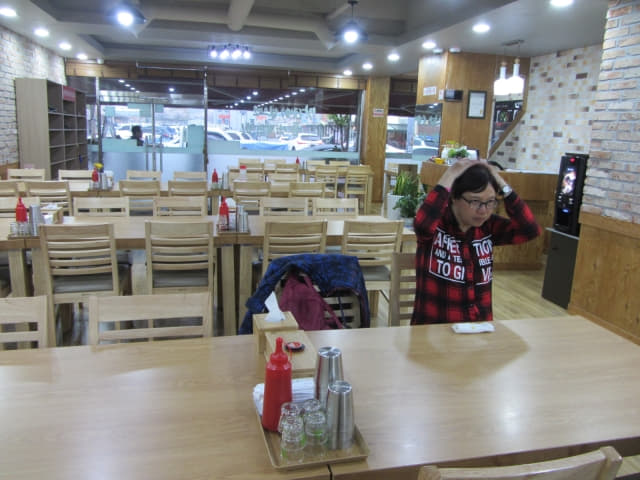
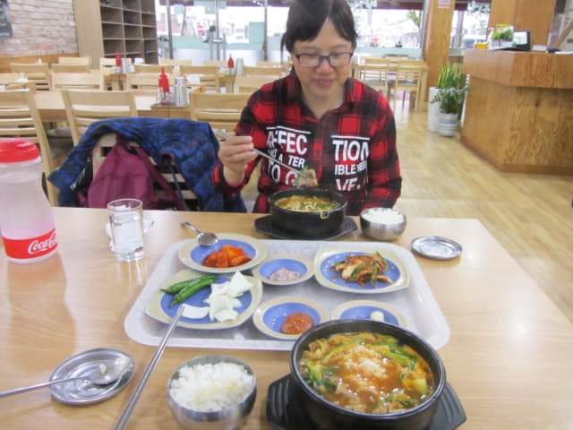

參觀完 Guesthouse Happy Tour 賓館的佈置及設施後, 是時候往順天下集市「超熱情 도사식당 餐館」探望我們在上次秋天旅程認識的朋友, 順便在她那裡吃晚飯。撐傘冒大雨循剛才走來的路一直走, 穿過橫躺順天東川兩岸的豐得橋, 在橋頭轉左穿過順天下集市, 沿馬路走一會便來到「超熱情餐廳」, 因為我們上次秋天旅程在順天逗留了四天, 有三天的晚飯都是在這裡開餐, 所以對附近的環境十分熟悉, 好像設定了自動導航便來到餐廳的門前。門外的裝修沒有什麼改變, 仍然放了兩個魚缸。
這是我們兩年前在晚上拍攝的照片, 招牌和裝修都是一樣。
匆匆進入餐廳, 心情既開心、又緊張, 準備給老朋友一個驚喜, 但換來卻是驚訝, 熟悉的裝修佈置完全改變了, 看不到我們期望見到的笑容及聽到的聲音, 走來招呼我們是一張陌生的面孔, 心裡已感覺到……。
連忙將兩年前離開順天前一晚和老朋友拍攝的照片給店員看, 店員看了一看, 表示她已經沒有經營這餐館了。因語言隔閡的關係, 沒法了解更多, 唯有推測一些可能永遠無法證實的原因, 可能她………; 也可能她……..; 她會不會…….. 。
店員叫我們留在這裡吃晚餐, 但故人不在, 那有心情, 便婉轉推卻。轉身離開餐館, 有點失落的感覺, 畢竟在順天逗留四天, 其中一個原因是想和老朋友敘舊, 只可嘆人面不知何處去, 店舖依舊營業中! 若有緣, 有天我們總能相遇。
順天下集市「아랫장국밥」餐館豬頭肉湯飯晚餐
吃不成老朋友的晚餐, 期望熱鬧的場面落空, 接著又要為吃什麼煩惱了, 想起我們上次旅程曾經光顧「건봉국밥」餐館吃豬頭肉湯飯, 便立即走到馬路對面, 但發覺附近一帶所有店舖都不同了, 舊的樸素餐廳不見了, 取而代之是裝修光亮的餐廳, 想不到只是短短的兩年, 竟然改變那麼大, 有面目全非的感覺。唯有在舊址新店的餐廳吃晚餐, 餐廳名稱是「아랫장국밥」。
進入餐館, 可能時間尚早, 只是下午六時, 還未到晚餐時間, 只有我們兩個顧客。服務員同樣能操流利的普通話, 原來是從中國杭州來的, 所以在點菜上沒有困難, 店舖同樣有供應豬頭肉湯飯, 便叫了兩客。

只等了一會, 食物陸續送上來, 韓國當地餐館的效率真是非常高, 最重要是永遠不會「漏單」的。食物味道不錯, 吃得也很飽, 結帳每客只是 7,000 韓元, 總數是 14,000 韓元。
